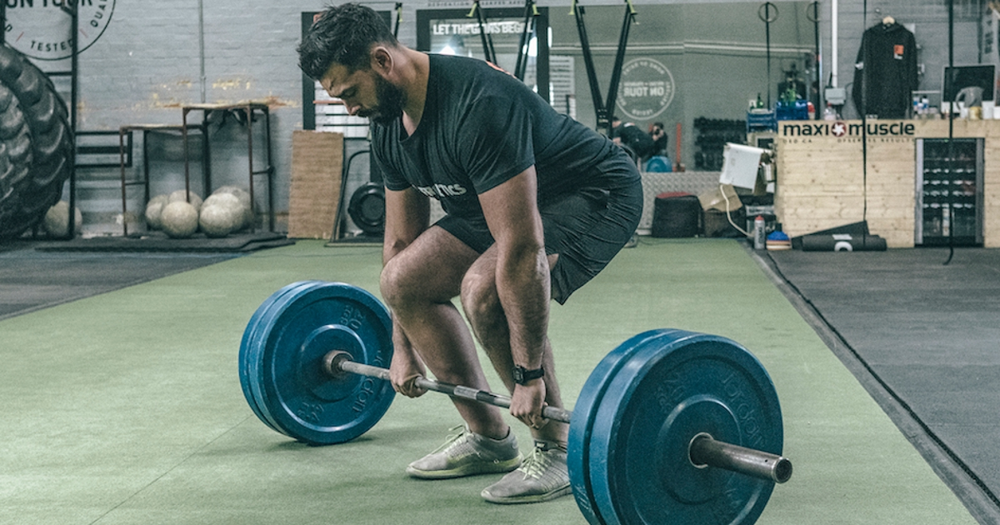

The deadlift is a weight training exercise in which a loaded barbell or bar is lifted off the ground to the level of the hips, torso perpendicular to the floor, before being placed back on the ground. It is one of the three powerlifting exercises, along with the squat and bench press. Depending on which style one chooses to use, different muscles will be targeted. For example, with a conventional stance, the back, hamstrings, and glutes will be targeted primarily. With a sumo stance, the quads and glutes will be primarily targeted.
